Calibration Utility¶
Overview¶
Many facilities have their own instrumentation laboratories with specialized equipment and reporting requirements. The Calibration utility is flexible and, with minimal training, staff should be able to quickly adapt existing company procedures to the iTest interface. Several report types are included to provide a documented history of all calibrations.
The calibration procedure is an involved, step-by-step process. Once the system is properly calibrated, it should provide consistent and accurate results.
Before recalibrating thermocouple readouts and other measuring devices, it is recommended that you check the existing calibration. This could save both time and effort as it may only be necessary to calibrate the channels which are outside of their tolerance limits. If only one channel is out of limits, then only one channel needs to be recalibrated.
The Calibration utility lets you calibrate one or more channels assuming that all selected channels require the same stimulus to calibrate. The Calibrate dialog box lets you perform a full, multiple-point calibration, or zero/span compensation.
Calibration Utility
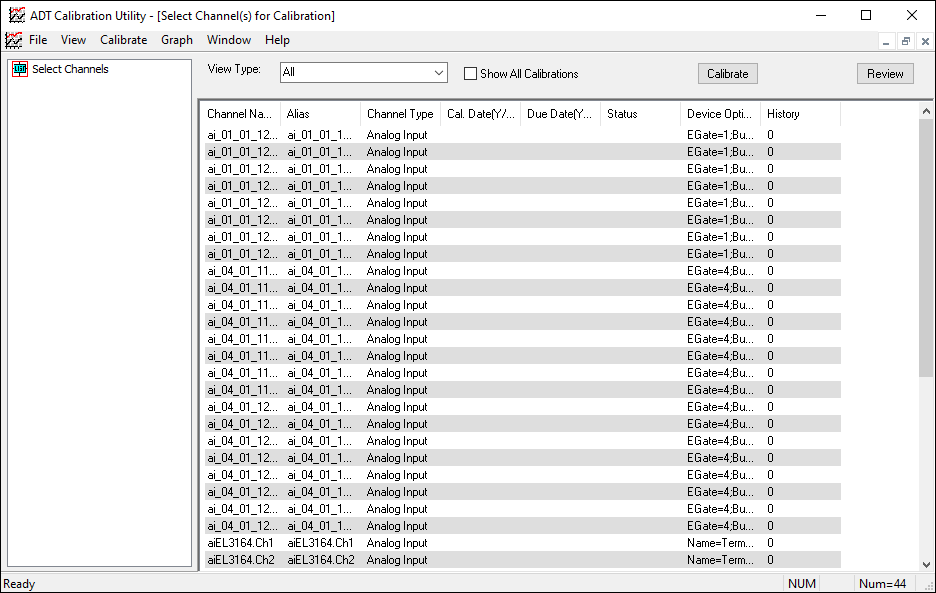
Both procedures involve exciting a transducer with a known stimulus, specifying this value in iTest, and having iTest measure the signal. In the case of a multi-point polynomial fit, the system performs a curve fit between the applied stimulus and measured voltage to determine calibration coefficients. Offset and gain values (for raw value) are calculated for a zero/span compensation.
The Calibration utility can only be used when iTest is connected directly to data acquisition hardware.
General Calibration Configuration¶
Calibration procedures must take place under strictly controlled conditions in which highly regulated known values are introduced into the system. Controlled conditions include using certifiable National Instrument Standard (NIST) equipment.
Calibration is needed when:
- A new transducer is installed.
- A facility requires calibration to meet reporting requirements.
Calibration procedures may require some of the following NIST-certified equipment:
- Signal generator
- Millivolt source
- Weight set
- Pressure source
- Ammeter
- Voltmeter
- Thermocouple/RTD calibrator
- Thermocouple/RTD simulator
|
 |
CAUTION: |
Unexpected conditions may result if the system is not powered up correctly. Be sure power has been applied to the system in the correct sequence. |
System hardware should be powered up before calibration and allowed to become stable. Usually 20-30 minutes is adequate; however, there are labs that leave hardware and software running for many weeks before calibration.
A&D recommends checking calibration at prescribed intervals. Calibration frequency will be determined by a number of factors including required accuracy, working environment of equipment, and stability.
|
|
CAUTION: |
Avoid PC power failure or an improper shutdown sequence. A PC power failure causes the controlling system to lose its connections to the hardware platform. For equipment and cell safety concerns, check the power backup system to protect against inadvertent power failure. |
Calibration Data Reports¶
The Calibration utility consists of three files: calibrate.exe, calobj.dll, and calconvert.exe. Calibration results are saved in caltable.csv, a comma-delimited file located in the $SUPPORTDIR directory specified in the Config.ini file. This file can be imported into a database or spreadsheet program for formatting or further review.
Current calibration records are stored in the calcoeffs.txt file, which also resides in the root of the $SUPPORTDIR directory.
Converting Previous Calibration Records¶
The first time you run the Calibration utility, you must convert calibration records to the new format if you are using pre-existing records to support test activities.
Double-click on calconvert.exe, which is located in the CalDB.mdb file in the $SUPPORTDIR directory specified in the Config.ini file. This imports all previous calibration records in CalDB.mdb into the caltable.csv file.
Calibrating Database Channels¶
- Open either the Console or AutomationPanel.
- Prepare the transducers with a means for providing a known stimulus. In the case of a dynamometer load cell, use calibrated weights to simulate a torque load. For pressure transducers, a calibrated gauge or transducer and a pressure source is required.
- Click the button (Tools > Calibrate) to open the Select Channel(s) for Calibration dialog box in the Console. For AutomationPanel users, access to the Calibrate utility depends on how your layout was designed by your administrator (it may be configured as a button, an item on the TopBar, or called via mailslot message). Whatever the case, launch the Calibrate utility.
Calibrate Utility
- Select the type of channel to display from the View Type list. You can also select all channels associated with a device driver.
- Select the Show All Calibrations option to show all recorded calibrations or just those that are present in the currently selected test.
- Select the database channel to be calibrated from the list of channels. You can calibrate multiple database channels at the same time (for example, thermocouples in a temperature bath or pressure transducers mounted on a common manifold). To select multiple database channels, press Ctrl as you click on a selection. In addition, you can also configure a channel by selecting Calibrate > Channel Configuration. Refer to the Channel Configuration section for more information.
- Click Calibrate to open the Calibration dialog box. The database channels listed in the Selections window are calibrated simultaneously.
Calibration Dialog Box
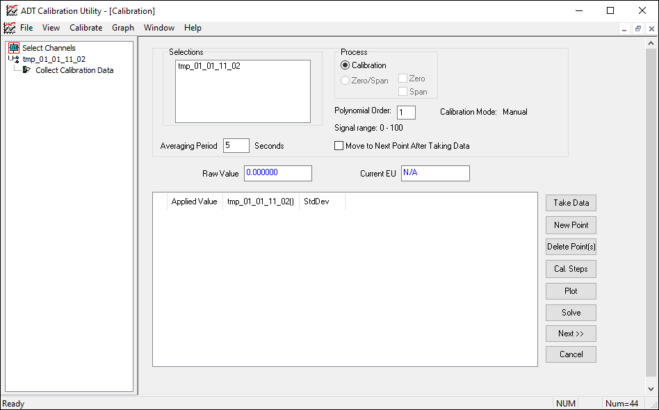
- In the Process area, choose full Calibration or Zero/Span. If you select Zero/Span, choose Zero and Span methods.
|
 |
NOTE: |
Zero/Span is not available when calibrating a channel for the first time. |
- If you select Calibration, click Cal Steps to open the Define Calibration Steps dialog box (this step is optional; you can also type a stimulus value for each calibration point in the Enter Applied Value field).
Define Calibration Steps Dialog
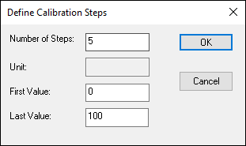
- Use this dialog box to define calibration stimulus values (Number of Steps, First Value, and Last Value). The software automatically defines the appropriate calibration steps based on the values you specify. For example, if you specify 0 as the First Value, 100 as the Last Value, and 5 as the Number of Steps, the system uses the following steps:
Step 1: 0
Step 2: 25
Step 3: 50
Step 4: 75
Step 5: 100
- After specifying the appropriate values, click OK to close the Define Calibration Steps dialog box. These settings are restored the next time you calibrate the same signals or parameters.
- Select Move to Next Point After Taking Data to move to the next calibration data point automatically after taking the current data point. If Move to Next Point After Taking Data is not selected, the cursor remains at the current data point, and repeat measurements will change the value of the current data point.
- In the Averaging Period field, specify the number of seconds over which to average the measured data.
- For Applied Value, the unit type (e.g., pressure or temperature) displays as well as the actual unit used (e.g., PSI or degrees C). Specify the stimulus being used to calibrate the channel in the associated field.
- Click Take Data to record data for the period specified in the Averaging Period field. When calibrating, the set time will count down in the Averaging Period field. At the end of the time period, the measured channel voltage displays in the Results list.
- To add a new calibration point, click the New Point button and enter a target value for the new data point.
- To delete unwanted data points, select one or more lines in the Results list, and then click Delete Point(s).
|
|
NOTE: |
Calibration values reside in memory only at this point. These values are not recorded to a data file until the calibration event is accepted as final. |
- Click Plot to display a graph of the calibration data (optional).
Plot
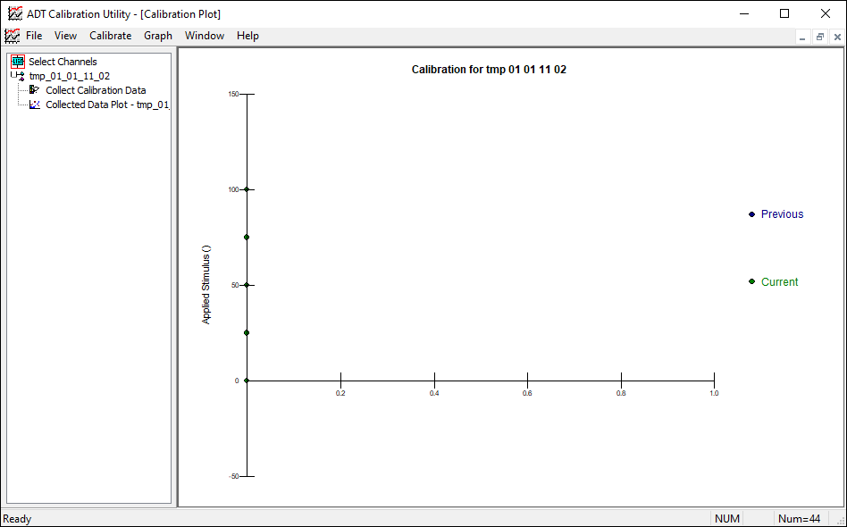
- Use the Graph menu on Calibration Utility window to turn grid lines on and off, print the graph, select the graph type (data points or error points), or select the data set.
- Click the Collect Calibration Data link from the Channel tree on the left to go back to the Calibration screen.
- Click Next to accept the calibration data, close the Calibration window, and open the Calibration Review dialog box.
|
|
NOTE: |
The text for the save button will read "Save All" if calibrating multiple channels and "Save" if calibrating just a single channel. |
The Calibration Review dialog box displays the current calibration activity prior to final acceptance and requires you to input additional information to complete the calibration record.
- Select a channel from the Signal list. This is a list of all the selected database channels.
- Enter the Operator name (or other identification) for the individual conducting the calibration.
- Enter the serial number (Ref. Serial #) and calibration due date (Ref. Due) for the reference, or master gauge, used to perform the calibration. You can select the due date by clicking on the calendar icon to the right of the Ref. Due field. The calibration due date can be reset by using the
resetcaldue <channel name(s)> command-line argument. For more information, refer to the Extending the Calibration Due Date section below.
- Enter the Device Serial # for the transducer being calibrated, and verify the Min and Max values for the transducer calibration.
- Enter the name of the Procedure followed during the calibration activity, the Location of the transducer, and any Comments relevant to the calibration.
- Verify the calibration Interval in days and the allowable Tolerance for measurements taken with the selected transducer. The calibration interval is always calculated by number of days from the current date. The new calibration coefficients will be displayed along with the calculated values based on these new coefficients for the current data points. If a prior calibration exists for the selected channel, the existing coefficients are shown along with the calculated values based on the existing coefficients for the current data points.
|
|
NOTE: |
This feature allows you to review the effects of calibration activity prior to activating the new coefficients in the system. |
- Statistics only display if more than the minimal number of points for a signal has been taken. The minimal number of points is based on the curve fit order of the parameter equation. For a first order polynomial (e.g., p1’loadcell’0,0,0,0,0) equation, three points must be taken for statistics to be meaningful, but only two points are necessary to perform a calibration. The statistics provide information about the quality of the calibration. The perfect value for the r and r 2 values (regression coefficients) is 1. The perfect value for the standard error value is 0. The Max Error value indicates the maximum error between the calculated and stimulus values.
- To adjust the order of the curve fit, click the up or down arrows to the left of the new coefficients statistics summary.
- Click File > Print from the File Menu to generate a two-page copy of the calibration data sheet. Header information displays on each page with a summary of the calibration data point on the first page and a plot of the calibration curve on the second page.
- Click Plot to display a graph of the calibration data.
- Use the Graph menu on the Calibration Utility window to turn grid lines on and off, print the graph, select the graph type (data points or error points), or select the data set.
- If you calibrated multiple signals, use the Data Set menu to plot results for the individual signals.
- After reviewing the calibration data, click Continue to accept the current calibration data and data sheet information. This action closes the Calibration Review window and opens the Accept window. If there are missing values that are considered essential, you are prompted for those values.
Accept Window
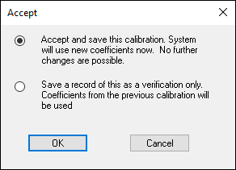
- To accept the new calibration coefficients, choose Accept and save this calibration. This updates the system using the new coefficients.
|
|
NOTE: |
You must accept the first calibration activity performed on any channel. |
- To use the calibration for verification purposes only, choose Save a record of this as a verification only to keep the existing calibration coefficients active in the system, and generate a verification record in the transducer calibration history file (caltable.csv).
- Click OK to close the Accept dialog box and return to the Calibration Review dialog box. The Continue button is now deactivated and the calibration activity for the selected channel is complete.
- Click Cancel to close the Calibration Review dialog box and return to the Calibration dialog box.
Extending the Calibration Due Date¶
To extend the calibration due date by another calibration interval without requiring a new calibration, use the following command-line argument:
Syntax:
resetcaldue <channel name(s)>
Parameters:
<channel name(s)> The name(s) of the channel(s) that will have their calibration due date extended. If multiple channel names are listed, then the channel names are separated by spaces.
Example:
- Command-Line Argument:
resetcaldue tEngineH2OOutlet xspare_tc_02_15
- Mailslot Message:
\\.\mailslot\Softpanel>>$EXECUTE;calibrate.exe resetcaldue tEngineH2OOutlet xspare_tc_02_15
A new calibration record will be created for each channel based on the previous calibration with the following exceptions:
- The record will reference the current time and date.
- The Cal Type is "Due Date Reset".
- The Comment is "Calibration due date reset".
- The Cal Due is recalculated based on the calibration interval to show the next calibration due date.
Reviewing Calibration History¶
You can review the calibration history for any channel in the caltable.csv file. Individual calibration records can be printed or deleted.
- Click the Calibrate button on the iTest Console toolbar to open the Calibration dialog box.
- Select the name of the channel to review from the Channel tree on the right (not shown in example below).
- Click the Review button at the top to open the Calibration History Review dialog box.
Calibration History Review Dialog
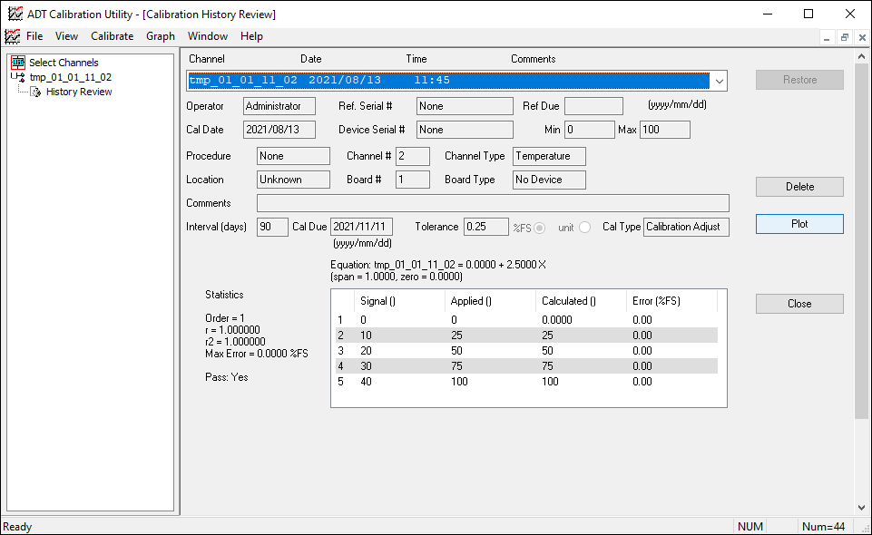
- Select a channel from the Signal list. This list contains the database channels that have been calibrated.
- Click Delete to remove unwanted calibration records. You are asked to confirm the deletion of a calibration record from the calibration database.
- Click File > Print to generate a one-page copy of the calibration data sheet. All header information is shown along with a summary of the calibration data points and a plot of the calibration curve.
- Click Plot to display a graph of the calibration data. The generated plot shows the fitted curve with 20% beyond the maximum stimulus and 20% below the minimum stimulus.
Plot of Calibration Data
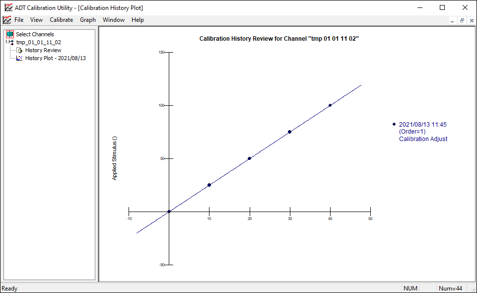
- Use the Graph menu on the Calibration Utility window to turn grid lines on and off, print the graph, select the graph type (data points or error points), or select the data set.
Graph
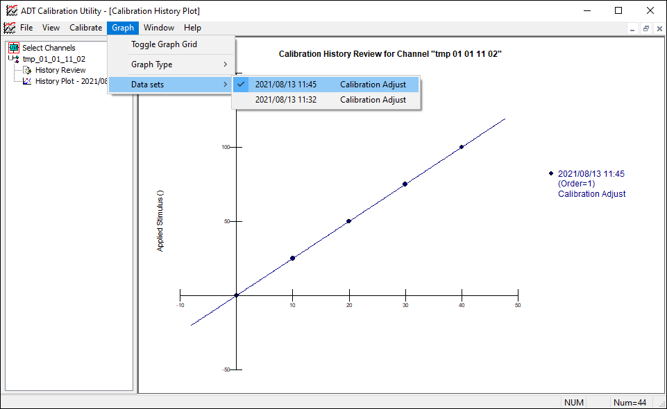
- Click Close to exit the Calibration History Review and return to the Calibration dialog box.
Purging Calibration Records¶
- Click the Calibrate button on the iTest Console toolbar to open the Calibration dialog box.
- Click Purge to clear the database records. You are asked to confirm the deletion. Click OK to delete all but the three most recent calibrations for each channel.
Calibration Metrics¶
iTest has metrics that are primarily used for the verification of an existing calibration. These metrics are computed using the method described in EPA Part 1065.307 Linearity Verification. When cal check is performed, a least squares linear regression compares the newly measured values (computed using the old calibration coefficients) with the reference values. The resulting metrics reflect the linearity of the calibration and indicate whether the existing calibration is acceptable.
The available metrics are:
- Rsquared
- Y-Intercept
- Standard error of estimate
- Slope
According to EPA Part 1065.307 Linearity Verification, if these numbers fall within certain bounds, then the channel does not have to be re-calibrated. Part 1065.307 mandates a 10-point measurement over the operating range of the transducer, but the calibrate program allows for any number of points.
Calibration Metrics
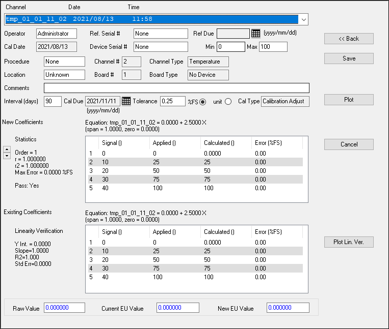
Personal Channel Column Configuration¶
The Calibrate > Select Channel Column Configuration option in the ADT Calibrate Utility dialog allows you to configure the columns that display on the Calibration main screen. You can add columns to include fields of the RDB that are specific to your facility.
Select Channel Column Configuration
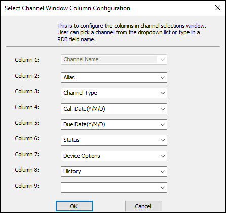
Channel Configuration¶
You can directly configure a selected channel's calibration by selecting Calibrate > Channel Configuration. This option opens the Channel Configuration dialog.
Channel Configuration Dialog
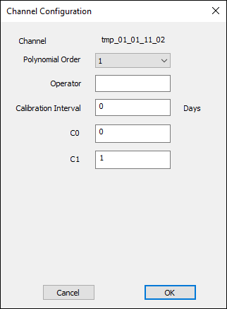
Refer to the table below to configure the selected channel.
Channel Configuration Fields
| Field |
Description |
| Channel |
(Read-only) The name of the selected channel. |
| Polynomial Order |
The order number (0-5) of the polynomial. You can create up to a 5th order polynomial by using the Polynomial Order drop-down menu. The polynomial order is used for the curve fit. |
| Operator |
The name of the operator. |
| Calibration Interval (Days) |
The specified interval in days after a calibration is done before the next calibration is due. |
| Coefficients (C0 - C5) |
The number of available fields is dependent on the Polynomial Order. Enter any coefficients to be used in the polynomial. Unused coefficients are assumed to be 0. Refer to Calibration Coefficients for more information. |
Backing Up and Restoring the Calibration Database File¶
iTest can backup and restore the caltable.csv from the GUI. Clicking the File > Backup Calibration Database File option from the ADT Calibrate Utility menu will back up both the caltable.csv and the calcoeffs.txt file both of which are needed to revert to a previous version of coefficients.
Recovering Coefficients from the History File¶
If the calcoeffs.txt file gets lost or corrupted, you can use a menu option to recover the last coefficients for each calibrated channel from the calibration history and write them into the calcoffs.txt file. The menu option is located under File > Regenerate Coefficient File as show below:
Regenerate Coefficient File
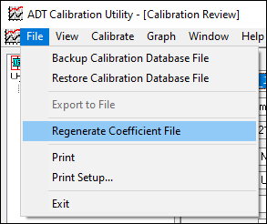
When you select this option, you will be warned that the calcoeffs.txt file will be overwritten and given the option to not continue:
Warning Message
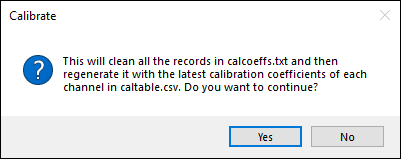
Calibration Groups¶
Use the Calibrate > Edit Groups menu option to launch the group edit dialog where user can create new group, edit existing group or delete a group. The channels in a calibration group are simultaneously calibrated using the same stimulus. Check Automatic Calibration if the group is to be used for automated calibration with a Mensor CPC 6000 or Fluke 7526A device.
Calibration Groups
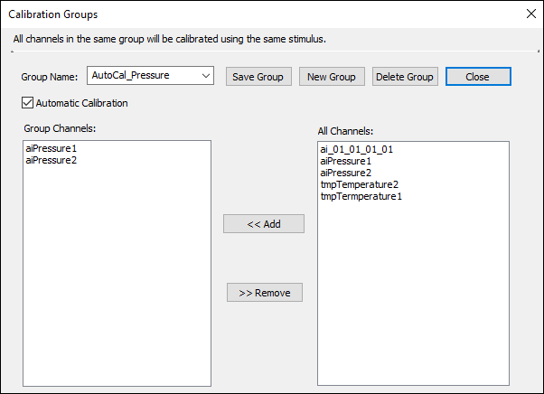
Defined calibration groups are displayed in the View Type list box on the Select Channel window.
Calibration Group Select
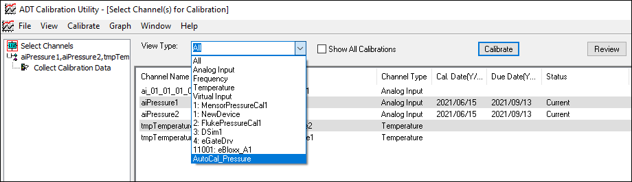
Automatic Calibration¶
The Calibrate tool supports automated multi-point calibration of a group of channels in conjunction with either a Fluke 7526A or Mensor CPC 6000 pressure calibration device. These devices are connected to iTest through their respective iTest drivers.
Performing an Automatic Calibration¶
Set the AutoCalDriverSelection and AutoCalDriverSelectionStr channels to indicate the device to be used.
Select an automatic calibration group and click the Calibrate button.
AutoCal Take Data
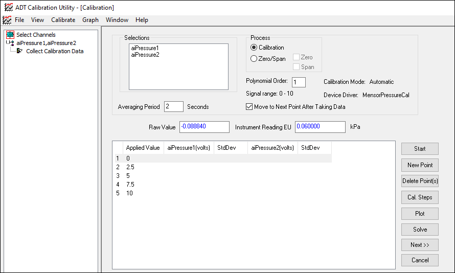
Click the Start button. Then the automatic calibration process will begin:
- The Define Calibration Steps dialog will be opened, if no calibration steps have been defined.
- The user is prompted to confirm the automatic calibration device is ready and in the expected units.
- The Calibration utility checks the device driver status.
- The Calibration utility issues the first setpoint to the driver, waits for status from the driver that the device is ready, and then takes the channel raw data.
- Repeat step 4 until all calibration points are taken.
- During step 4, driver status and device error are continuously monitored. If the device becomes not ready or if an error happens, it will prompt the user and automatic calibration will stop.
After all calibration points are taken, you can click the Solve button to view the calibration curve fitting results and decide whether to redo the calibration or move to the next step by clicking the Next>> button to see the calibration data and save the calibration.
AutoCal Solve
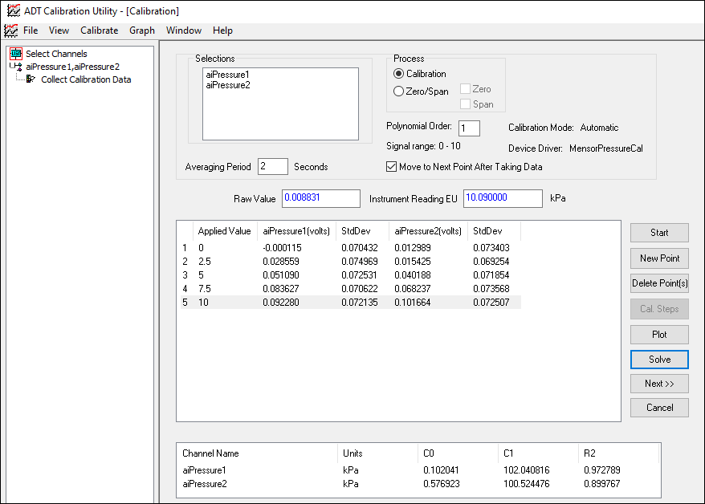
Required Channels for Automatic Calibration¶
The automatic calibration requires a number of channels to be defined by the user.
The following channels are automatically set by iTest or the calibration device:
AutoCalSP: Setpoint in engineering units for calibration device.AutoCalSync: When changes to 1, send the setpoint to device and set it back to 0.AutoCalMeasStatus: 0-busy, 1-ready. Set to 0 before sending new setpoint to device, wait for it to change to 1 to take data. Driver is responsible to set this channel to 1 when device is ready.AutoCalMeas: Device reading in engineering units. The user can monitor this value in both the ADT Calibration Utility and the driver window to see if this value stabilizes.AutoCalErrorStr: Device error text.AutoCalErrorNum: Device error number.AutoCalDriverStatus: 3 means driver is ready. Other values mean the driver is not running, not connected, etc.
The following channels must be set by the user:
AutoCalDriverSelection: Indicate which driver is currently active for automatic calibration. 1-MensorPressureCal, 2-FlukePressureCal.AutoCalDriverSelectionStr: A Virtual String channel to indicate the name of the driver selected.